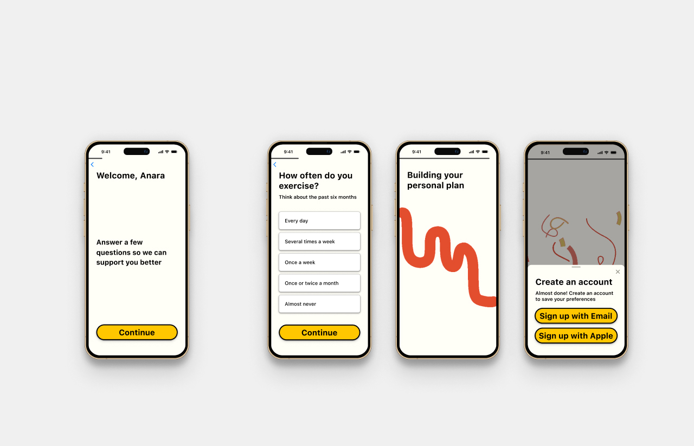
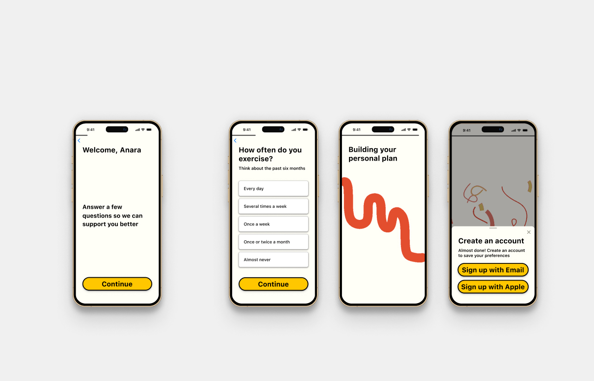
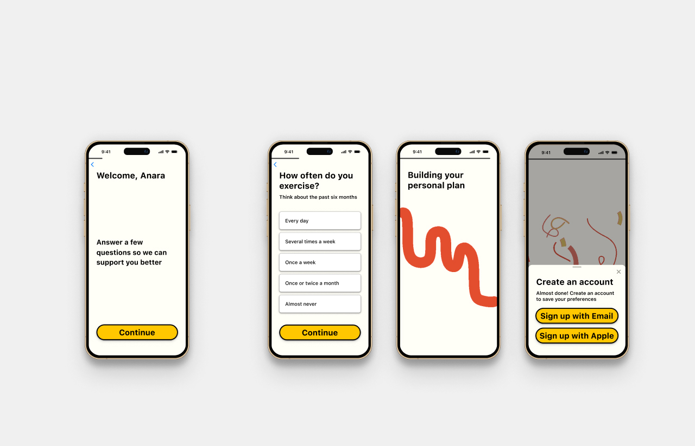
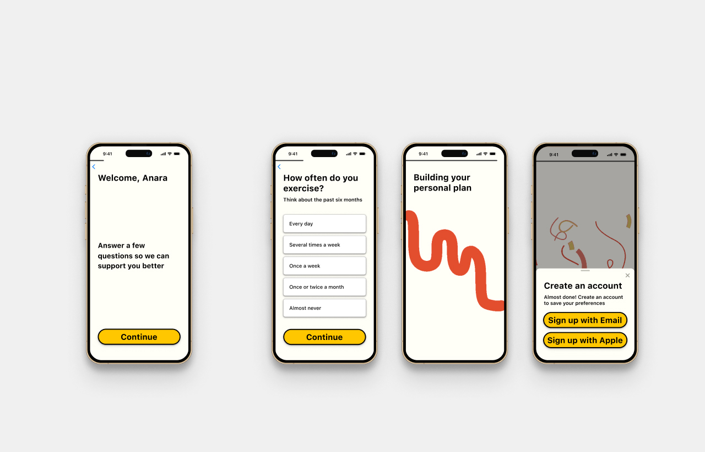

 

Native iOS app for iPhone and iPad for a sustainability tech startup in Malmö.
An app that uses the CityBikes API to give the user realtime information about bike sharing networks all over the world.
Design for a live concert website for multiple screen sizes.